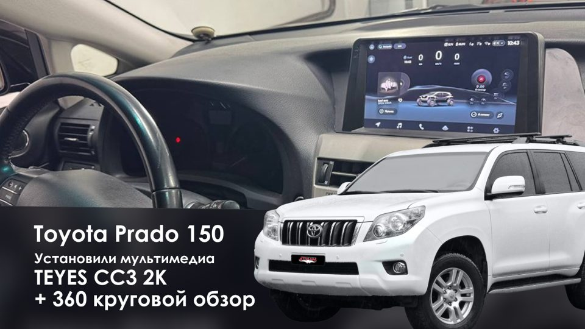
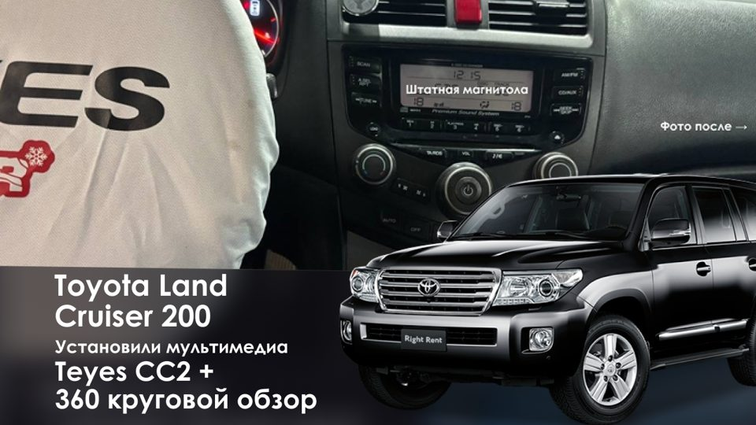
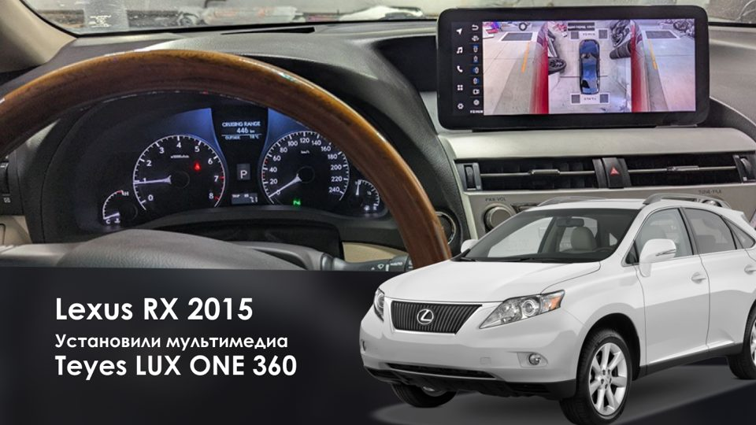
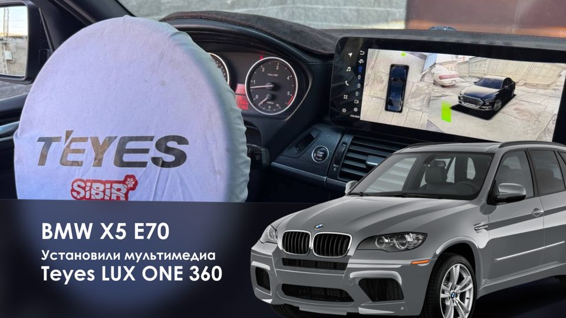
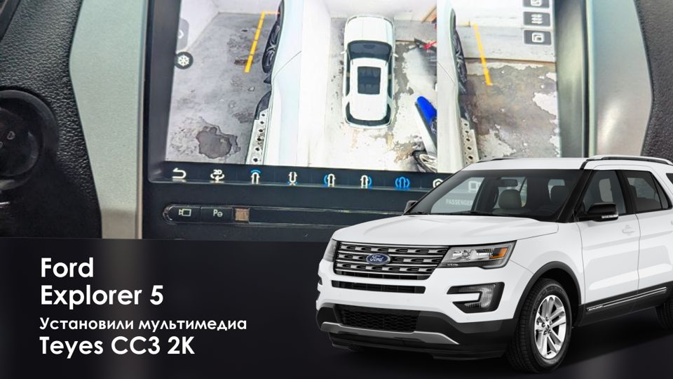
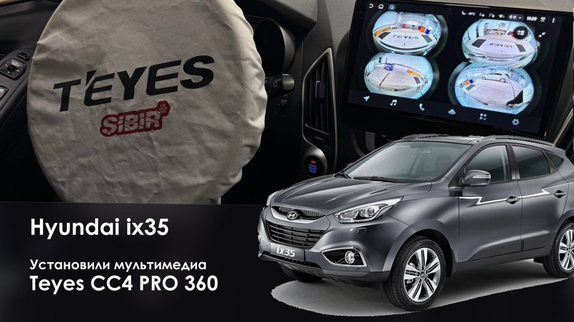

Камера заднего вида
Ставим в штатное место, если оно есть, или аккуратно над номером. Картинка с разметкой выводится на экран магнитолы при включении задней передачи.
от 4 500 ₽Ставим камеру заднего вида, переднюю камеру, парктроники, видеорегистратор и систему кругового обзора 360° с картинкой на экране магнитолы. Подключаем штатные камеры к новой мультимедиа Teyes. Круговой обзор калибруем на специальных матах, чтобы вид сверху совпадал с реальной машиной.
Подключаем штатные камеры к Teyes
Калибровка 360° на специальных матах
Гарантия на камеры и работу
Больше тысячи машин за два года
Ставим в штатное место, если оно есть, или аккуратно над номером. Картинка с разметкой выводится на экран магнитолы при включении задней передачи.
от 4 500 ₽Меняете магнитолу на Teyes, а штатную камеру хочется оставить. Подключаем через переходник под вашу модель. Получится ли, зависит от года и рынка машины: проверяем по фото заранее.
цена по моделиЧетыре камеры: спереди, под боковыми зеркалами и сзади. Магнитола собирает их в вид сверху и 3D-обзор. Работает с Teyes CC3 2K, CC4, CC4 PRO и LUX ONE в версии с поддержкой 360°.
от 25 000 ₽Для кроссоверов и внедорожников с высоким капотом. Ставим в решётку или рядом с эмблемой, картинку выводим на экран магнитолы.
цена по моделиДатчики в бампер с сигналом и подсказкой на экране. Точную цену называем после осмотра: она зависит от бампера и количества датчиков.
от 5 500 ₽Без провода через весь салон: проводку прячем под панель. Запись смотрите на большом экране магнитолы, а не на двухдюймовом дисплее.
от 2 000 ₽Система снимает машину с четырёх сторон и склеивает картинку так, будто вы смотрите на неё сверху. На экране видно, где бордюр, столб и соседняя машина. Можно повернуть 3D-вид или открыть отдельную камеру.
Главное в установке — калибровка. Вокруг машины раскладываем маты с разметкой, и магнитола подстраивает стыки между камерами. Без калибровки линии на экране «плывут», и вид сверху не совпадает с реальностью. Видео с камер можно записывать на флешку.
Цены «от» указаны на 11.10.2026. Точную сумму называем после подбора по марке, году и комплектации.
Камеры и регистратор, как и другие аксессуары, обычно ставим за 3–5 часов. Круговой обзор с калибровкой занимает больше времени: срок скажем после осмотра.

Toyota Prado 150: Teyes CC3 2K и круговой обзор 360°
Toyota Land Cruiser 200: мультимедиа Teyes и 360°
Lexus RX 2015: Teyes LUX ONE 360
BMW X5 E70: Teyes LUX ONE 360
Ford Explorer 5: Teyes CC3 2K и 360°
Hyundai ix35: Teyes CC4 PRO 360Установка магнитолы и четырёх камер с настройкой и калибровкой — от 25 000 ₽. Комплект камер Teyes 3D 360 1080P стоит 9 900 ₽. Итог зависит от модели машины и от того, какая магнитола стоит сейчас.
На большинство машин можно. Нужна магнитола с поддержкой 360°: Teyes CC3 2K, CC4, CC4 PRO или LUX ONE в версии 360. Пришлите фото панели и бамперов в Telegram, скажем, что встанет.
Камеры кругового обзора Teyes работают с магнитолами Teyes, у которых есть поддержка 360°. За работу камер с магнитолами других брендов не ручаемся: проще подобрать совместимый комплект, чем потом искать, почему картинка не склеивается.
Вокруг машины раскладывают маты с разметкой. Магнитола по ним подстраивает стыки между четырьмя камерами, и вид сверху совпадает с реальной машиной. Без калибровки линии на экране расходятся.
Так называют обзор 360° с функцией «прозрачного днища»: система по записанной картинке показывает, что находится под машиной. Есть ли эта функция в комплекте для вашей машины, скажем при подборе.
От 4 500 ₽. Если покупаете у нас мультимедиа Teyes, камера заднего вида в подарок или −1000 ₽ на широкоугольную камеру. Назовите менеджеру промокод САЙТ.
В штатное место, если оно есть: в подсветку номера или ручку багажника. Если места нет, ставим над номером так, чтобы был виден бампер. Как будет на вашей машине, решаем по модели.
Чаще всего да: подключаем её к Teyes через переходник под модель. Но это зависит от года, рынка и комплектации машины. Проверяем заранее по фото, чтобы не было сюрпризов.
Камеры и видеорегистратор обычно ставим за 3–5 часов. Круговой обзор с калибровкой дольше, срок назовём после осмотра.
Поставить омыватель камеры. Он смывает грязь с объектива по кнопке, и картинка снова чистая. Ставим омыватели передней и задней камеры, подбираем под модель.
Назовите марку, год и комплектацию. Ответим, какие камеры подойдут, сохранится ли штатная и во сколько обойдётся установка.